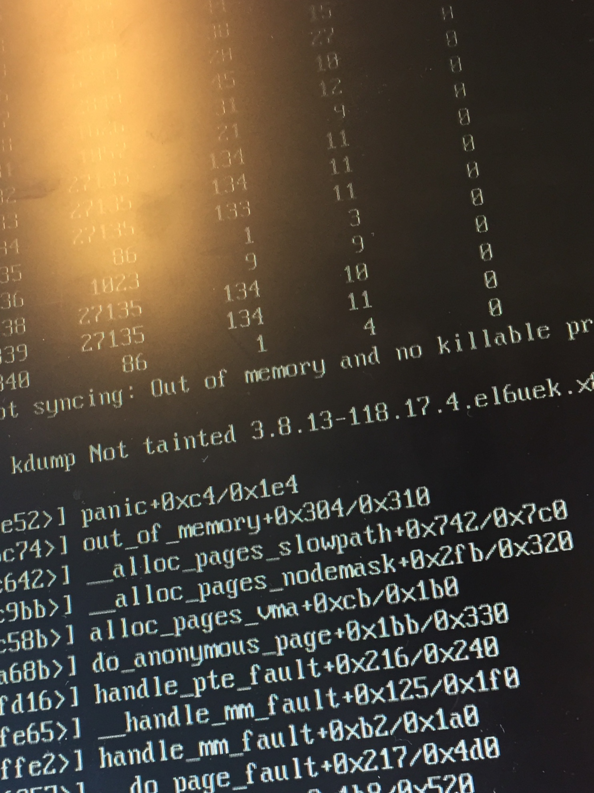

This was first published on https://www.dbi-services.com/blog/kernel-panic-not-syncing-out-of-memory-and-no-killable-processes/ (2018-06-26)
Republishing here for new followers. The content is related to the versions available at the publication date.
.
This is a quick post to give a solution (maybe not the best one as this was just quick troubleshooting) if, at boot, you see something like:
Trying to allocate 1041 pages for VMLINUZ [Linux=EFI, setup=0x111f, size=0x41108d01]and then:
Kernel panic - not syncing: Out of memory and no killable processes
Pid: 1228 comm: kworker Not tainted 3.8.13-118.17.4.el6uek.x86_64 #2
If you do not see the messages, then you may need to remove the ‘quiet’ option of kernel and replace it by ‘nosplash’ – this is done from grub.
So, there’s not enough memory to start the kernel. I got this from a server that had been shut down to be moved to another data center, so at first, I checked that the RAM was ok. Actually, the problem was with the configuration of hugepages (vm.nr_hugepages in /etc/sysctl.conf) which was allocating nearly the whole RAM. Probably because the setting has been erroneously changed without checking /proc/meminfo.
So, without any clue about what the problem was, I started by forcing the kernel to use 4GB (instead of getting it from hardware info). This is done by pressing any key on the GRUB menu, ‘e’ to edit, add the ‘mem=4g’. Then the boot was ok. Of course, if the server tries to start the Oracle instances, the systems starts to swap so better change also the runlevel.
This is sufficient to check the huge pages allocation and ensure that you leave enough memory for at least the kernel (but also consider also the system, the PGA, …). So don’t forget that the mem= option, usually there to give a maximum limit, may be useful also to guarantee a minimum of RAM for the kernel.
{kind=link}